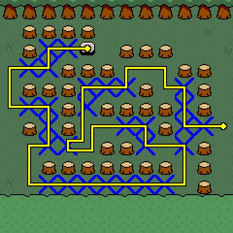

Chapter 1 has 3 unused rooms that are notably labeled as "Surface" instead of "Hometown".
Or at least that's what I've gathered by looking at the strings in Cheat Engine. All of the ones labeled "Hometown" seem to be used, but there are only two unused "Surface" names and 3 of these unused rooms, so I'm not sure which one is "Surface - Fields".
Room 138 is a large room with lots of tall grass and two wormholes leading to levels 5 and 6. There are also two exits that go to completely unrelated rooms and one that just goes out of bounds.
In the genocide route, the tileset is corrupted, the Froggit NPC is gone and the sign's interaction text is different.
This room is noticeably similar to a room from Demo 2 which was actually used in that version with the Froggit NPC, two wormholes and two of the exits.
Room 139 contains an XO puzzle! ...that doesn't work. It would've also had a second puzzle if it was finished, but currently in its place is an almost exact copy (one tree stump is missing) of the first puzzle, without the X tiles or the button.
Chara and Asriel are also found in this room each standing next to one of the puzzles, but they can't be interacted with.
After the two puzzles, there's a wormhole that leads to level 5.
This room reacts appropriately to the genocide route, corrupting the tilesets and removing the NPCs. Their collisions stay, though.
If the puzzle worked, this would've been the solution:
Room 146 is a room with tall grass...
As this room doesn't even have Harlow in it, it's completely impossible to move around. So this is really all we can see.
This room also reacts to the genocide route.